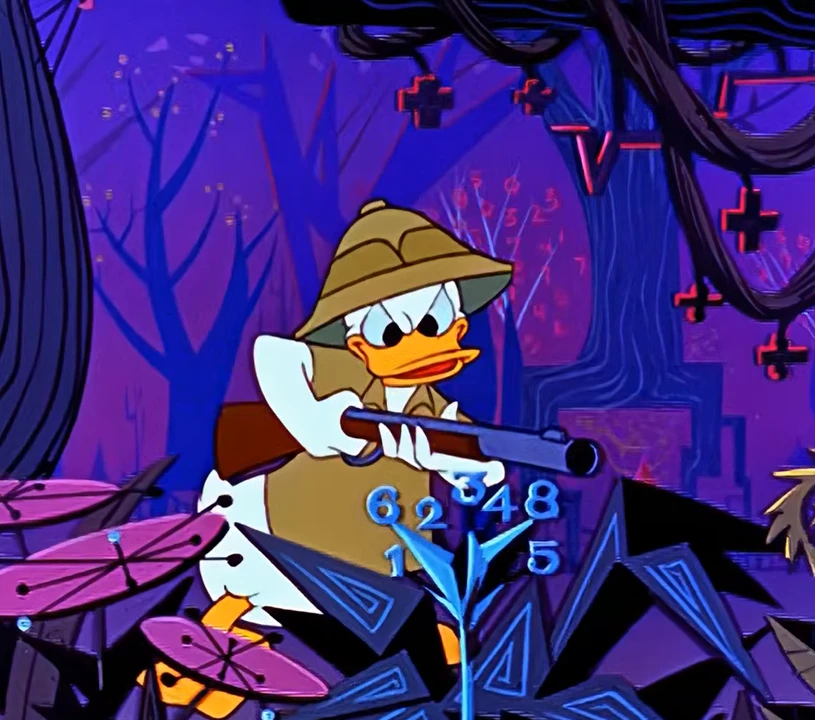

PhD candidate at Paris 13 supervised by Morgan Rogers and Grégory Ginot. Lately, I’ve been thinking about 1-, 2-, \infty-, multi-, generalized multi-, … categories.
Email: czech@math.univ-paris13.fr
Upcoming
- 26–27 Nov 2026 · Higher Geometric Structures along the Lower Rhine XXI, MPIM Bonn
